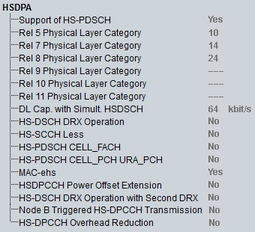

HSDPA UE Capabilities
This section provides HSDPA-related UE capabilities.

HSDPA UE capabilities
- Support of HS-PDSCH:
Indicates whether the UE supports the HS-PDSCH - "Rel 5, Rel 7 - Rel 11 Physical Layer Category":
HS-DSCH physical layer category of the UE for R5 (HSDPA), R7 (HSDPA+), R8 (DC-HSDPA+), R9 (DB-DC-HSDPA+), R10 (multi-cell HSDPA) and R11 (64-QAM MIMO) connections - "DL Cap. with Simult. HSDSCH":
Supported DPCH data rate in case an HS-DSCH is configured simultaneously - "HS-DSCH DRX Operation":
Indicates whether the UE supports the discontinuous HS-DSCH operation (see "Continuous Packet Connectivity (CPC)") - "HS-SCCH Less":
Indicates whether the UE supports the HS-SCCH less operation (see "Continuous Packet Connectivity (CPC)") - "HS-PDSCH CELL_FACH":
Indicates whether the UE supports HS-PDSCH in CELL_FACH state - "HS-PDSCH CELL_PCH URA_PCH":
Indicates whether the UE supports the HS-PDSCH in CELL_PCH and URA_PCH states - MAC-ehs:
Indicates whether the UE supports the MAC-ehs - "HS-DPCCH Power Offset Extension":
Indicates whether the UE supports the values 9 and 10 of deltaACK, deltaNACK and deltaCQI power offset - "HS-DSCH DRX Operation with Second DRX":
Indicates whether the UE supports HS-DSCH DRX operation with second DRX cycle in CELL_FACH state - "Node B Triggered HS-DPCCH Transmission":
Indicates whether the UE supports NodeB triggered HS-DPCCH transmission in CELL_FACH state - "HS-DPCCH Overhead Reduction":
Indicates whether the UE supports HS-DPCCH overhead reduction for multi-RAB with DCH